Daily Dosa – UX Design for Restaurant

Daily Dosa is an upcoming family restaurant which serves traditional food with a modern twist. Located in a metropolitan area, Daily Dosa decided to develop an online solution to enable customers to reserve tables online for dining in, place food orders from the restaurant menu, and have contactless pickup options.
Working adults who would like to have healthy food but are unable to customize food to their preference and to reserve a table in advance.
Design a mobile app that allows users to order food online and reserve a table to dine-in.
UX Designer – User Research, Wireframing, Prototyping, and Visual Design.
I created empathy maps by conducting interviews with users to understand their needs. A primary user group identified through research was working adults who don't have time to cook meals, and homemakers who wish to spend their family's special days like birthdays and anniversaries at the restaurant.
During the research, I found that users want an easy-to-use app design, curbside pickup options, menu with pictures, waiting hours information, and clear vegetarian and non-vegetarian options.

Age: 34 | Software Engineer | Bachelor's Degree

Age: 40 | Homemaker | Masters in HR Management
Mapping Emma's and Annie's user journey revealed how helpful it would be to have access to a dedicated food app with customizable menu options and reserving the table in advance to avoid waiting hours.
 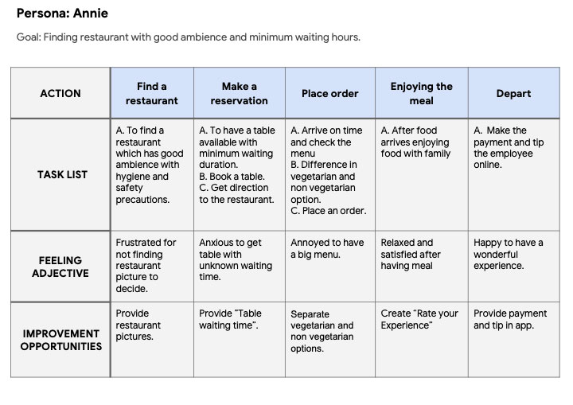
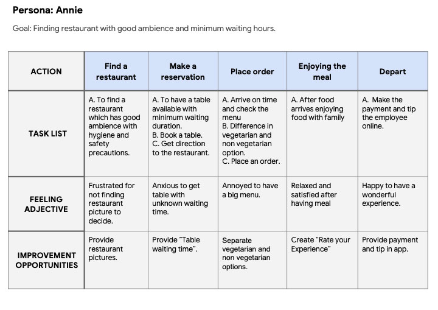
After empathizing with the users and building the user journey map to identify user pain points, I proceeded to draft my paper wireframes. I wanted to have a clutter-free, quick, and easy ordering process for the users.
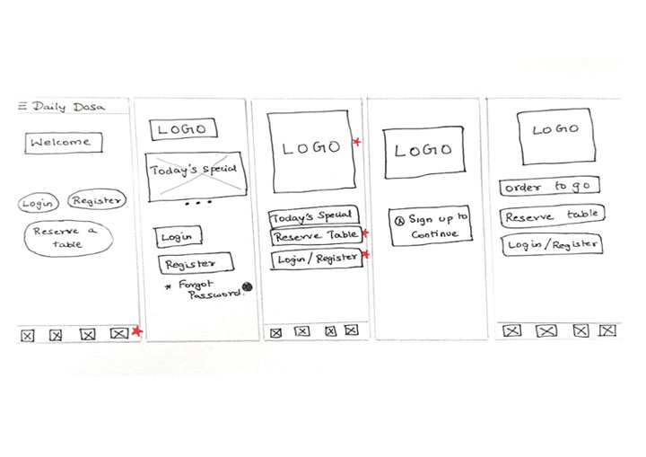 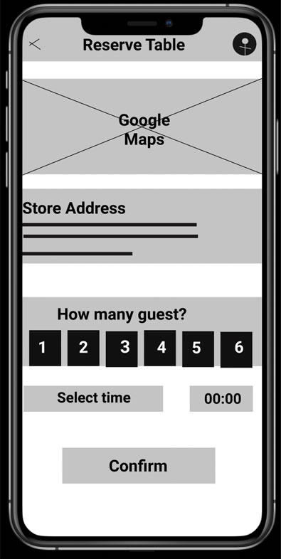
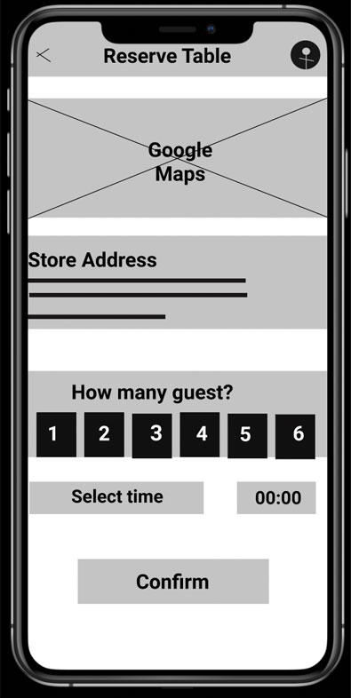

 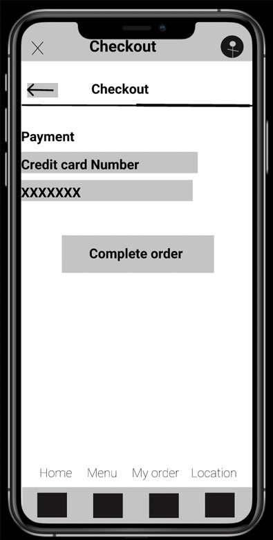
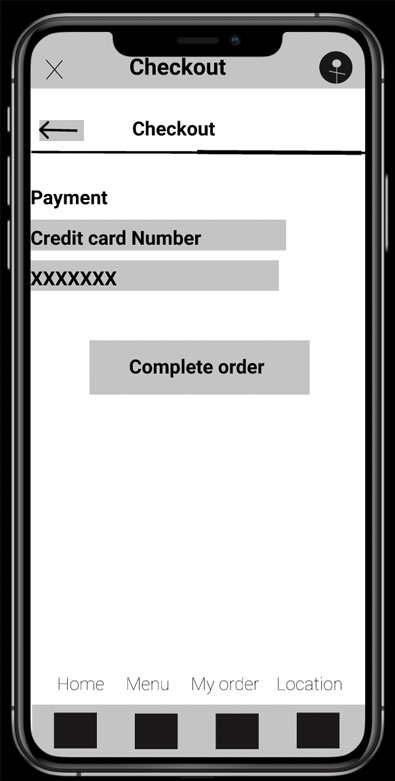

Based on the user journey map, I was able to understand user pain points and create a low-fidelity prototype.

After conducting 2 rounds of usability studies, below are my findings:

 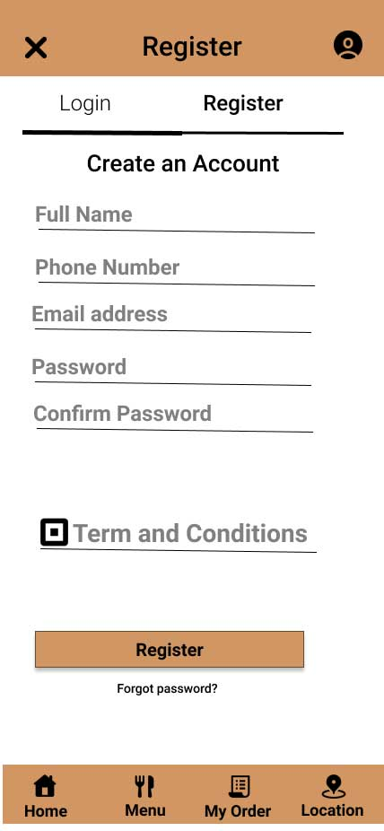
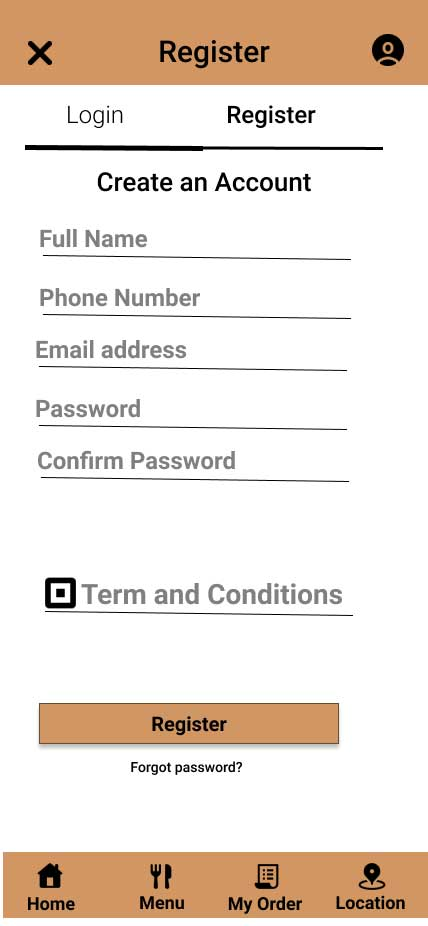
 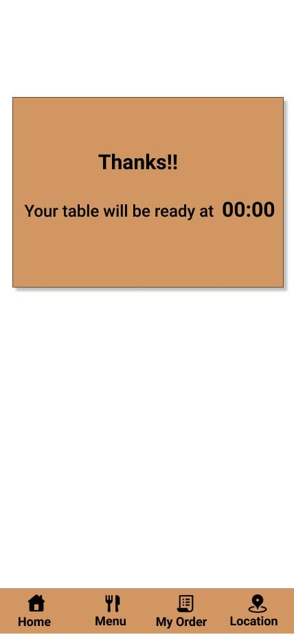
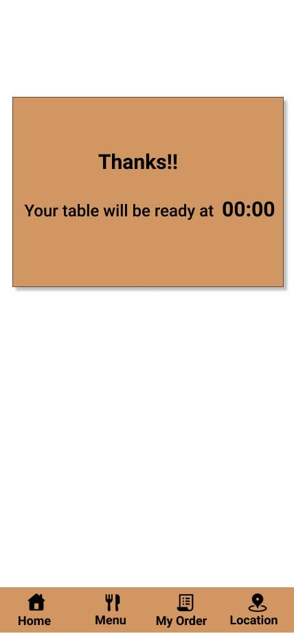

 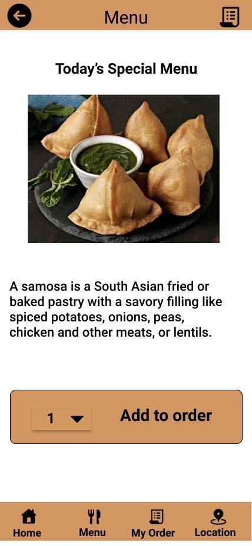
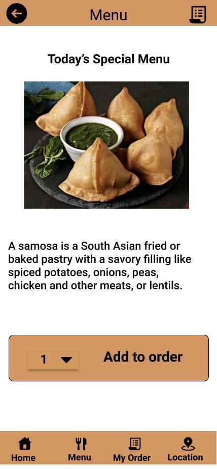
 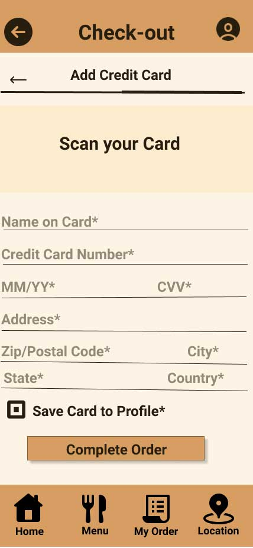
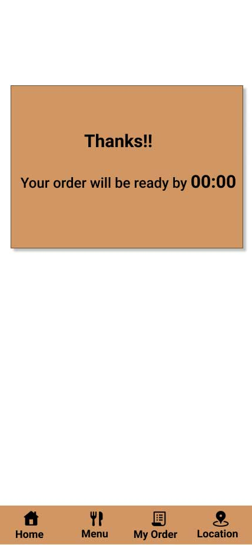
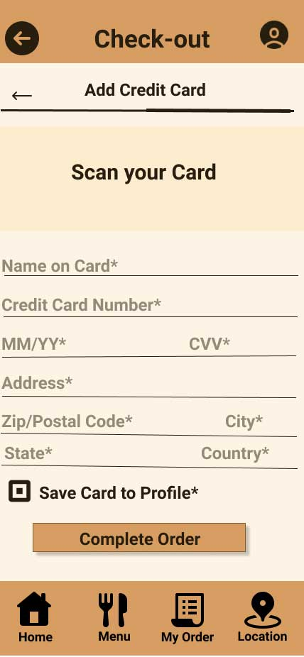
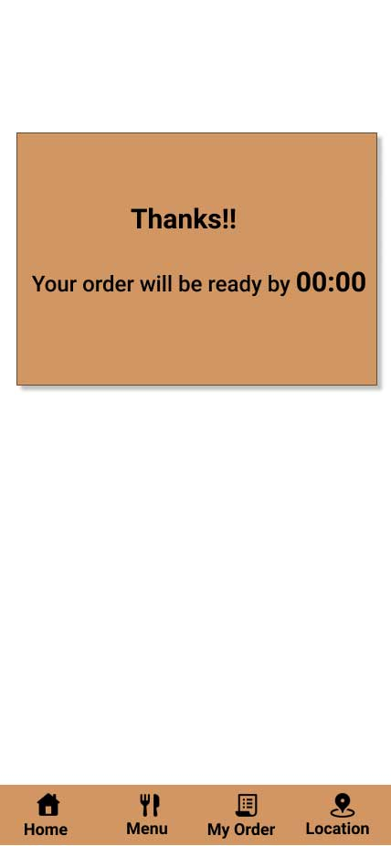
The final high-fidelity prototype aimed to achieve the results obtained from the usability study.

Users are really happy with the app which meets the requirements of the user. The app provides a seamless experience for ordering food and reserving tables.
The most interesting part of this case study was conducting user research and understanding how identifying pain points helps to identify user needs. Creating high-fidelity prototypes was an interesting process that taught me a lot about iterative design.
Want to work together? Let's connect.
Contact Me